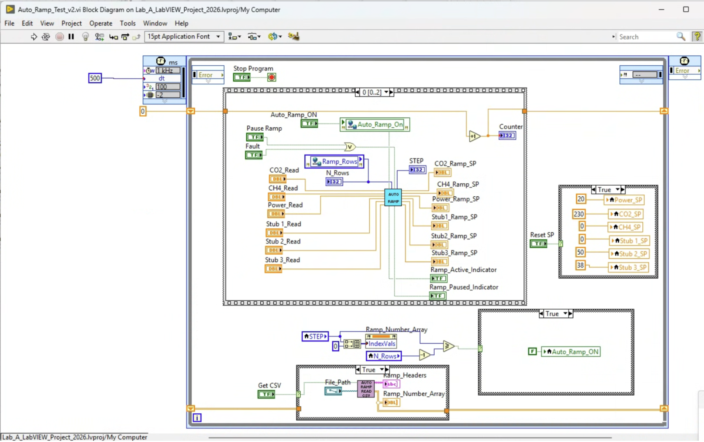

Pilot reactor ramp from ignition to full power was manual, variable, and limited to a small number of trained operators.
Approach
Built a LabVIEW SubVI that reads a CSV ramp plan, sequences setpoint changes, and waits for measured values to settle before advancing — with pause and fault-interrupt capability.
Outcome
Ramp is now repeatable and operator-independent. CSV format makes updates straightforward when the process changes.
Problem: Manual Ramp
Ramping the pilot reactor from ignition to full operating power requires sequencing multiple control inputs — RF power, gas flow rates, and tuner position — in a specific order and at specific rates. Done manually, this process was highly dependent on operator feel and experience, leading to variability between runs and restricting who could safely operate the system.
How It Works
The ramp SubVI accepts a CSV file as input — each row defines a step with target setpoints for power, flow rates, and tuning position, along with settling tolerances. On initiation:
The VI reads the first step and pushes new setpoints to the active control loops
It monitors measured values and waits until each channel settles within its specified tolerance
Once settled, it increments to the next step and repeats
The operator can pause at any point; a fault condition interrupts the sequence automatically
Load CSV file
Start Auto-Ramp
at STEP 0
Change CO₂ SP
Wait CO₂ SP ≈ Actual
Change CH₄ SP
Wait CH₄ SP ≈ Actual
Change Power SP
Change RP Limit Wait Power SP ≈ Actual
Change Stub 1–3 SP
Wait Stub ≈ Actual
Check all SP Ready
Ramp Pause = False Auto-Ramp Active = True
Block-flow logic for the pilot ramp automation sequence. Each channel settles within tolerance before the step increments.
Development & Validation
The program was developed and verified in four sequential stages before being trusted on live plasma.
01
Adapt existing ramp automation
Extended an existing ramp automation from a separate lab environment. Key additions were tuner stub position control (three stubs) and a switch from .xlsx to .csv as the input format, simplifying the file interface and eliminating the Excel dependency.
02
Test in isolated lab environment
Validated the sequence logic against a simulated MFC ramp response in an isolated test environment. Confirmed that setpoint changes propagated correctly, that the settling check advanced the step only when actual values matched setpoints, and that the final step terminated the ramp with setpoints held.
03
Integrate into pilot reactor code
Ported the SubVI into the live pilot reactor codebase, accounting for differences in write-execution paths between the test environment and the GLP/S-TEAM tuner hardware. LabVIEW variable references for setpoints and actual-value reads were updated to match the production control system.
04
Staged testing on live system
Tested the complete CSV profile (20 → 100 kW) first without plasma, verifying setpoint sequencing and timing. Then repeated with MW on and plasma present, with CSV adjustments made for stability at key steps. Ramp timing will be optimised further once operational confidence is established.

LabVIEW block diagram from the Lab A test environment. Centre: the Auto Ramp SubVI with inputs for actual reads (CO₂, CH₄, Power, Stub 1–3) and outputs for ramp setpoints and status indicators. Bottom: the CSV read block that loads the ramp profile and populates the step array. Right: the Reset SP case structure that holds setpoints at initial values when Auto Ramp is inactive.
Result
The ramp procedure is now consistent regardless of who initiates it. Updating the ramp profile is as simple as editing the CSV file — no code changes required. This also made it easier to document and reproduce specific ramp conditions across test campaigns.
Interactive Simulation
Step through a 6-step ramp profile at 5× speed. Each channel settles in sequence — CO₂, then CH₄, then Power, then Stubs — before the step advances. Pause at any point or trigger a fault interrupt.
FAULT — Auto-Ramp interrupted. Setpoints held at last completed step.